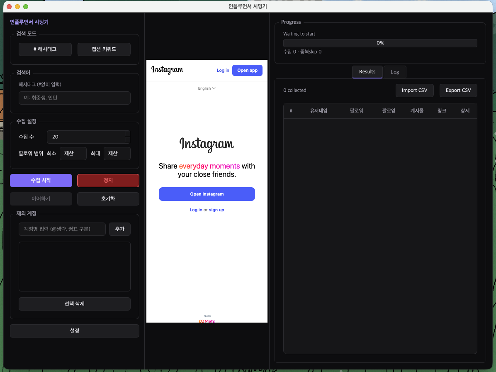
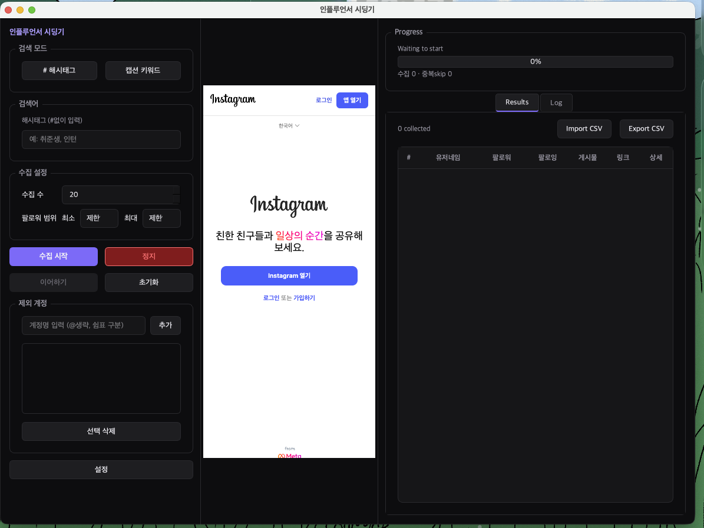
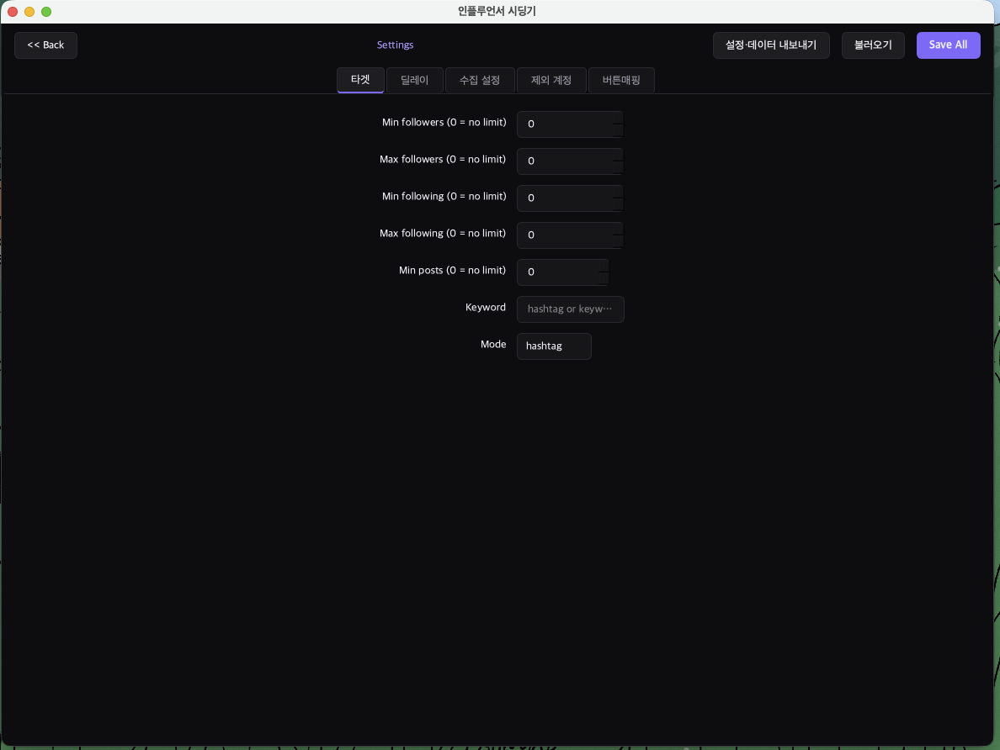
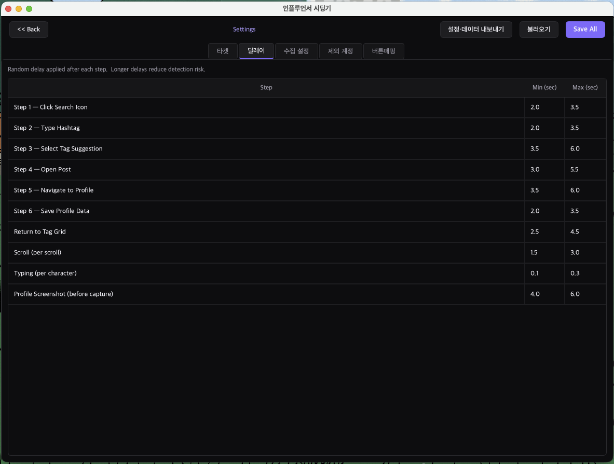
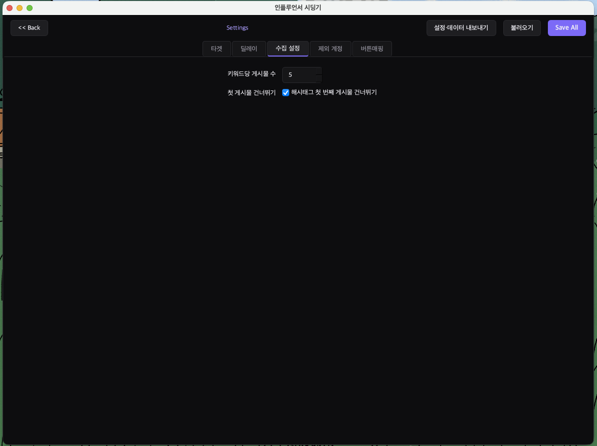
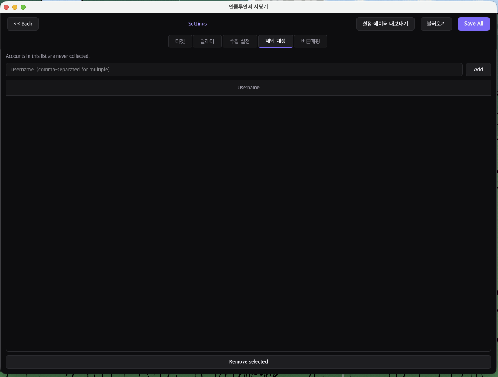
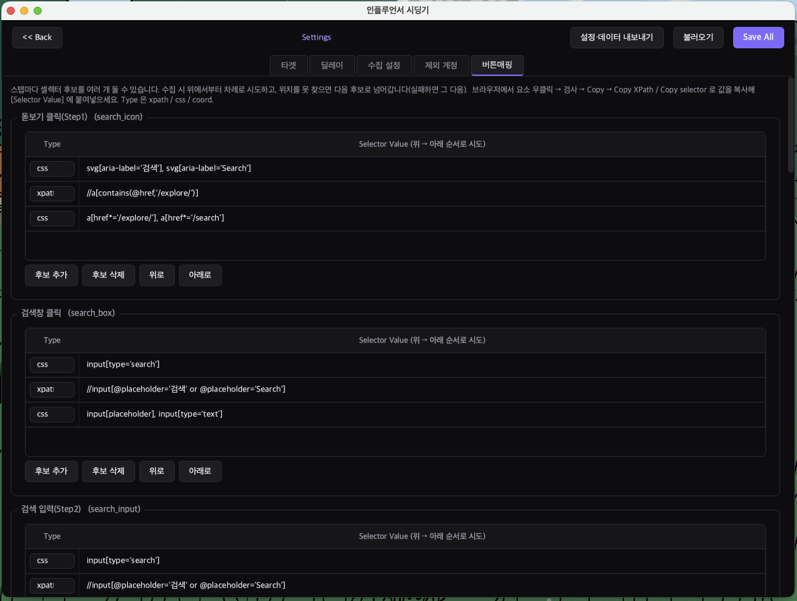
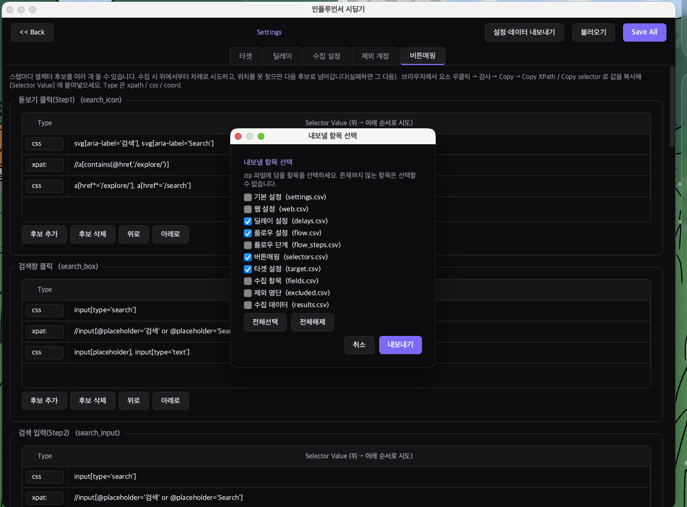

인스타그램 해시태그/키워드 기반 인플루언서 프로필 수집 도구
1단계 — 로그인
앱을 처음 실행하면 가운데에 인스타그램 로그인 화면이 나타납니다.
상단의 English ∨ 를 클릭해 한국어로 변경한 뒤, 로그인 또는 가입하기를 눌러 인스타그램 계정으로 로그인합니다.

처음 실행 시 — English

한국어로 변경 후
2단계 — 수집 설정
좌측 패널에서 수집 방식을 선택합니다.
| 모드 | 설명 |
|---|---|
| # 해시태그 | 특정 해시태그가 달린 게시물에서 프로필 수집 (예: 취준생, 인턴) |
| 캡션 키워드 | 게시물 캡션에 특정 키워드가 포함된 프로필 수집 |
• 수집 수 — 한 번에 수집할 최대 프로필 수 (기본값: 20)
• 팔로워 범위 — 최소/최대 팔로워 수 필터 (0 = 제한 없음)
| 버튼 | 기능 |
|---|---|
| 수집 시작 | 설정한 조건으로 새로 수집 시작 |
| 이어하기 | 이전에 중단된 수집을 이어서 진행 |
| 정지 | 현재 수집 중단 (수집된 데이터는 유지) |
| 초기화 | 수집 결과 및 상태 초기화 |
3단계 — 상세 설정
좌측 하단 설정 버튼 → 타겟 탭에서 팔로워/팔로잉/게시물 수 필터를 세밀하게 지정할 수 있습니다. 0 = 제한 없음.

각 수집 단계 사이의 대기 시간(초)을 Min / Max 범위로 설정합니다. 딜레이가 길수록 자동화 탐지 위험이 낮아집니다.

• 키워드당 게시물 수 — 키워드 1개당 탐색할 게시물 수
• 첫 게시물 건너뛰기 — 해시태그의 상단(광고성) 첫 게시물을 건너뜁니다

수집에서 제외할 인스타그램 계정을 등록합니다. 쉼표로 구분하여 여러 계정을 한 번에 추가할 수 있습니다 (@ 제외).

인스타그램 UI 변경 시 수집이 실패하는 경우, 이 탭에서 CSS/XPath 셀렉터를 직접 수정할 수 있습니다. 브라우저에서 요소 검사 → Copy → Copy XPath 또는 Copy selector로 값을 복사해 붙여넣으세요.

4단계 — 데이터 내보내기
수집이 완료되면 우측 상단 Export CSV 버튼을 클릭합니다.
내보낼 항목을 선택한 뒤 내보내기를 누르면 ZIP 파일로 저장됩니다.

| 항목 | 설명 |
|---|---|
| 딜레이 설정 (delays.csv) | 현재 딜레이 설정값 |
| 플로우 설정 (flow.csv) | 수집 플로우 설정 |
| 버튼매핑 (selectors.csv) | CSS/XPath 셀렉터 정보 |
| 타겟 설정 (target.csv) | 팔로워 범위 등 필터 설정 |
| 수집 데이터 (results.csv) | 수집된 프로필 전체 데이터 |